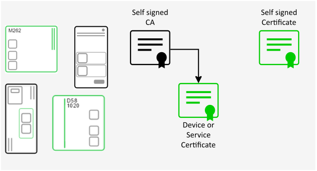
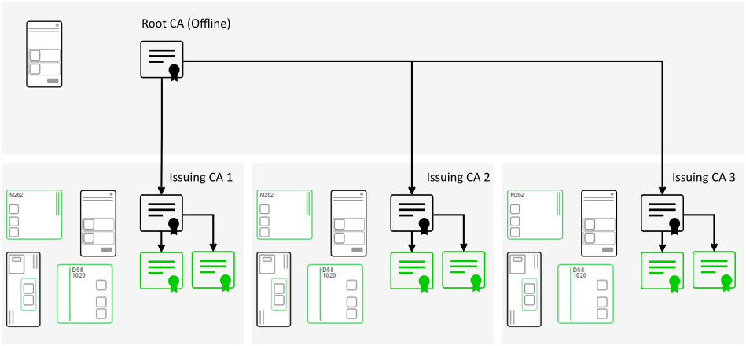
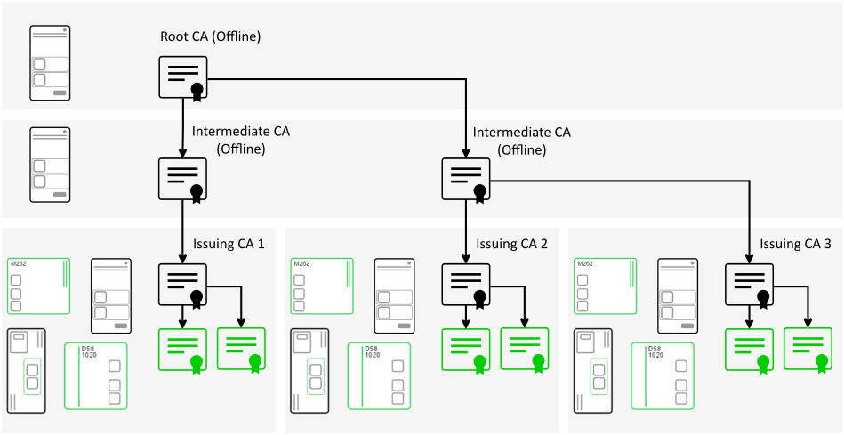

Single CA is both root issuer and trust anchor often referred to as Self Signed CA. Self Signed Certificate is a limited form of this architecture.
This has the disadvantage that if a private key is compromised no certificate can be revoked and the the entire PKI is exposed.

Root CA tier and issuing CAs tier: the Root CA tier is offline while the issuing CA is online. Limited support for this mode in EcoStruxure Automation Expert v25.0.

Root CA tier, an issuing CAs tier, and an intermediate tier placed between them. The Root CA tier is offline while the issuing CAs are online and can issue certificates.
The layering allows different policies (certificate properties and issuing procedures) to be applied at each level. Limited support for this mode in EcoStruxure Automation Expert v25.0.
